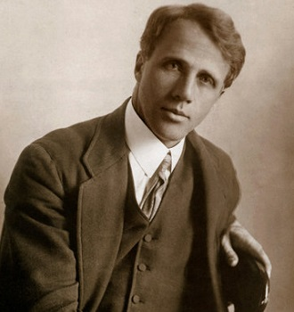

Robert Frost was an American poet, born in 1874 in San Francisco. Frost moved across the country early on in his life, moving with his family to Massachusetts. Frost is know for his poetry that describes life in rural America. In his life Frost won four Pulitzer Prizes for his Work. Frost passed away at age 88 in Boston in 1963.
Here is a link to the Index Page.